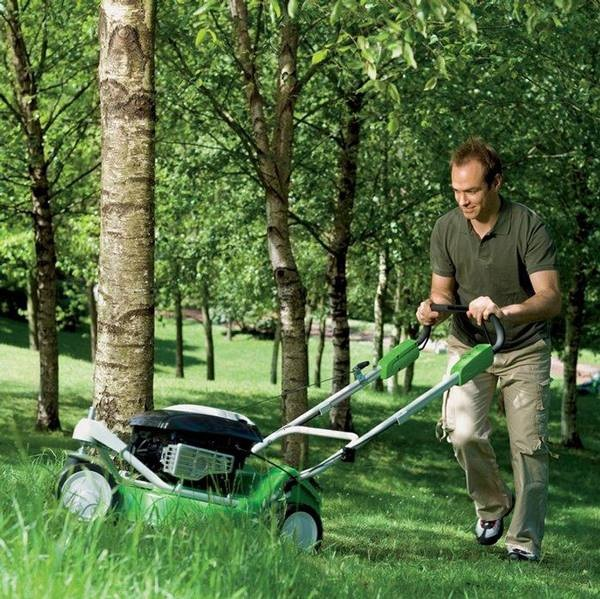

Друзья, сейчас лето, а значит регулярный покос травы - необходимый элемент ухода за газоном. Чтобы трава на лужайке была здоровой и красивой без лишних затрат времени и труда, стоит выбрать и купить качественную газонокосилку, подходящую именно для вашего газона
Газонокосилка имеет вид четырехколесной тележки, оснащенной ручкой и двигателем. Газонокосилка предназначена для покоса травы на газоне. Наиболее популярны газонокосилки бензиновые и электрические. И бензокосилки, электрокосилки имеют свои достоинства и недостатки.
Газонокосилки бензиновые (бензокосилки)
Бензиновые газонокосилки удобны, если вы косите траву на большом расстоянии от дома. Бензокосилку можно перенести на любой, даже самый отдаленный участок газона. Мощность бензиновых газонокосилок больше, чем у электрических: косить траву бензиновой травокосилкой можно часами без перерыва, не рискуя испортить двигатель. Скорость кошения травы бензиновой газонокосили также в разы превышает аналогичный показатель электрической газонокосилки.
Электрические газонокосилки (электрокосилки)
К плюсам электрических газонокосилок следует отнести низкий уровень шума, высокую экологичность и экономию средств при использовании (если у вас недорогое электричество). К недостаткам электрокосилок относятся необходимость во время работы носить за собой удлинитель, который цепляется за деревья и кустарники, а также относительно невысокая мощность двигателя электрической травокосилки и, соответственно, скорость покоса травы.
Как купить лучшую газонокосилку
При выборе газонокосилки обратите внимание на следующие показатели:
1.Мощность двигателя газонокосилки.
Выбирайте газонокосилки с наиболее мощным двигателем. Когда трава на газоне очень густая, номинальные обороты косилки снижаются и трава начинает рваться. Для мощных двигателей это небольшая проблема: они обладают приличным запасом и могут долго и стабильно косить в любую погоду.
2.Дека газонокосилки.
Чем больше глубина деки косилки, тем лучше для садовода. Высокие борта позволяют сформировать более мощный воздушный поток, благодаря чему трава без потерь скапливается в травосборнике. Лучший материал для деки - алюминий: он не ржавеет и имеет большой срок эксплуатации.
3.Нож и лопасти газонокосилки.
Широкие нож и лопасти газонокосилки создают более мощный воздушный поток. Кроме того, лучше, чтобы нож был хорошо наточен, тогда трава срезается без рывков. Точить ножи лучше всего в специальных сервисных центрах, сделать это самостоятельно неопытному человеку довольно сложно.
4.Наличие функции 3-х способов скашивания.
Газонокосилки производят покос травы тремя способами. Первый - с выбросом травы назад или в сторону. Недостаток этого метода в том, что после кошения нужно вручную собирать траву с газона для придания ему аккуратного вида (если только вы не планируете оставить эту траву на лужайке, чтобы защитить газон в зной и засуху или наоборот, в холод. Второй способ - накапливание травы в травосборнике. При этом лужайка выглядит ухоженной и аккуратной, а собранная трава направляется прямо в садовый компост или в другое предназначенное для нее место. Ну и, наконец, третий способ - мульчирование. В этом случае трава измельчается и равномерно разбрасывается по газону, ведь это прекрасный естественный кондиционер для лужайки. Лучше приобрести модель газонокосилки, которая поддерживаем все 3 режима.
5.Колеса газонокосилки.
Лучше купить модель с наибольшим диаметром колес. Большие колеса позволят косилке легче катиться по газону, а садоводу - прикладывать меньше усилий. К тому же широкие колеса меньше повреждают газон.
6.Травосборник газонокосилки.
Бывают косилки с жесткими и мягкими травосборниками. Мы настоятельно рекомендуем купить газонокосилку с жестким травосборником, его намного легче чистить. Трава из жесткого травосборника высыпается сама. Как правило, мягкие травосборники ставятся только на очень мощные газонокосилки, у которых воздушный поток настолько силен, что потерь травы до попадания в травосборник не проходит.
7.Складные ручки газонокосилки.
Такая комплектация позволит вам упаковать газонокосилку на зимнее хранение, даже если свободного места у вас совсем мало. Ну а сбор газонокосилки и приведение её в рабочее состояние занимает считанные секунды.
|  |